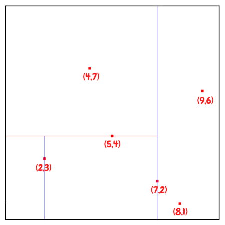
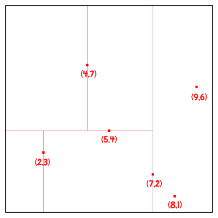
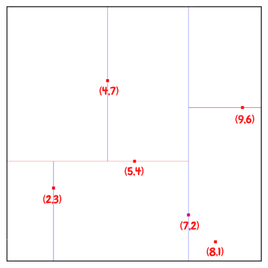
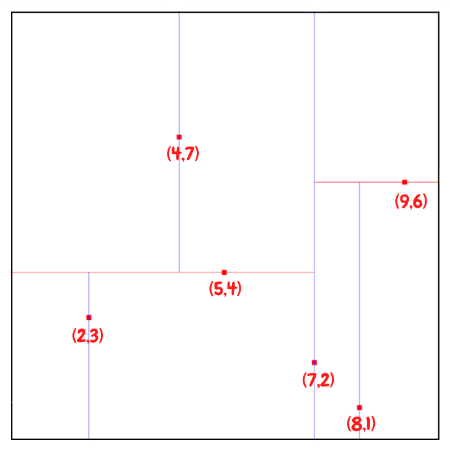

Introduction

A KD-Tree (short for k-dimensional tree) is a binary tree that splits points between alternating axes. Every leaf node is a k-dimensional point. By separating space by splitting regions, nearest neighbor search can be made much faster when using an algorithm like euclidean clustering.
Problem Statement

Let’s assume we get some 3D point clouds from LiDAR scan, and we want to abstract bounding box from each objects and track them. It would be great to break up and regroup the whole point clouds into smaller clusters, especially if you want to do multiple object tracking with cars, pedestrians, and bicyclists, for instance. One way to do that grouping and cluster point cloud data is called euclidean clustering, e.g. using DBSCAN.
The basic idea is to associate groups of points by how close together they are. In other words, we need to implement a nearest neighbor search.
Brute-force Nearest Neighbor search

The most naive neighbor search implementation involves the brute-force computation of distances between all pairs of points in the dataset: for $N$ samples in $D$ dimensions, this approach scales as $O(DN^2)$. Efficient brute-force neighbors searches can be very competitive for small data samples. However, as the number of samples $N$ grows, the brute-force approach quickly becomes infeasible.
Building KD-Tree
The key idea of building KD-Tree is to insert points alternating comparison between dimensions. As one moves down the tree, one cycles through the axes used to select the splitting planes.
For example, in a 3-dimensional tree, the root would have an x-aligned plane, the root’s children would both have y-aligned planes, the root’s grandchildren would all have z-aligned planes, and so on.
The canonical method of k-d tree construction has the following steps:
- First inserted point becomes root of the tree.
- Select axis based on depth so that axis cycles through all valid values. In our example: axis = depth % 2 , where depth of root is 0, and axis = 0/1 means choose x/y axis accordingly.
- Sort point list by axis and choose median as pivot element. If less branch left, if greater branch right.
- Traverse tree until node is empty(nullptr), then assign point to node.
- Repeat step 2-4 recursively until all of the points processed.
Example
Let’s start to build KD-Tree with an example. First of all, we randomly generate 6 points in 2D as our dataset:
(2,3), (5,4), (9,6), (4,7), (8,1), (7,2)
So first of all, we would first insert (7,2) since it is the median along the x axis.






The next point to be inserted would be (5, 4), the median of the three points for y. This would be followed by (-5.7,6.3) the lower median between the two for x, and then finally (-6.3,8.4). This ordering will allow the tree to more evenly split the region space and improve search time later.
Balanced Tree
Having a balanced tree that evenly splits regions improves the search time for finding points later. To improve the tree, insert points that alternate between splitting the x region and the y region evenly.
Usage (Advantage?)
By grouping points into regions in a KD-Tree, you can avoid calculating distance for possibly thousands of points just because you know they are not even considered in a close enough region.
The idea is you associate groups of points by how close together they are. To do a nearest neighbor search efficiently, you use a KD-Tree data structure which, on average, speeds up your look up time from $O(n)$ to $O(log(n))$. This is because the tree allows you to better break up your search space. By grouping points into regions in a KD-Tree, you can avoid calculating distance for possibly thousands of points just because you know they are not even considered in a close enough region.
利用KD-Tree查找元素
KD Tree建好之后，接下来就要利用KD Tree对元素进行查找了。查找的方式在BST的基础上又增加了一些难度，如下： \1. 从根节点开始，根据目标在分割特征中是否小于或大于当前节点，向左或向右移动。
\2. 一旦算法到达叶节点，它就将节点点保存为“当前最佳”。
\3. 回溯，即从叶节点再返回到根节点
\4. 如果当前节点比当前最佳节点更接近，那么它就成为当前最好的。
\5. 如果目标距离当前节点的父节点所在的将数据集分割为两份的超平面的距离更接近，说明当前节点的兄弟节点所在的子树有可能包含更近的点。因此需要对这个兄弟节点递归执行1-4步。
问题1： 每次对子空间的划分时，怎样确定在哪个维度上进行划分？
最简单的方法就是轮着来，即如果这次选择了在第i维上进行数据划分，那下一次就在第j(j≠i)维上进行划分，例如：j = (i mod k) + 1。想象一下我们切豆腐时，先是竖着切一刀，切成两半后，再横着来一刀，就得到了很小的方块豆腐。
可是“轮着来”的方法是否可以很好地解决问题呢？再次想象一下，我们现在要切的是一根木条，按照“轮着来”的方法先是竖着切一刀，木条一分为二，干净利落，接下来就是再横着切一刀，这个时候就有点考验刀法了，如果木条的直径（横截面）较大，还可以下手，如果直径较小，就没法往下切了。因此，如果K维数据的分布像上面的豆腐一样，“轮着来”的切分方法是可以奏效，但是如果K维度上数据的分布像木条一样，“轮着来”就不好用了。因此，还需要想想其他的切法。
如果一个K维数据集合的分布像木条一样，那就是说明这K维数据在木条较长方向代表的维度上，这些数据的分布散得比较开，数学上来说，就是这些数据在该维度上的方差（invariance）比较大，换句话说，正因为这些数据在该维度上分散的比较开，我们就更容易在这个维度上将它们划分开，因此，这就引出了我们选择维度的另一种方法：最大方差法（max invarince），即每次我们选择维度进行划分时，都选择具有最大方差维度。
问题2：在某个维度上进行划分时，怎样确保在这一维度上的划分得到的两个子集合的数量尽量相等，即左子树和右子树中的结点个数尽量相等？
假设当前我们按照最大方差法选择了在维度i上进行K维数据集S的划分，此时我们需要在维度i上将K维数据集合S划分为两个子集合A和B，子集合A中的数据在维度i上的值都小于子集合B中。首先考虑最简单的划分法，即选择第一个数作为比较对象（即划分轴，pivot），S中剩余的其他所有K维数据都跟该pivot在维度i上进行比较，如果小于pivot则划A集合，大于则划入B集合。把A集合和B集合分别看做是左子树和右子树，那么我们在构造一个二叉树的时候，当然是希望它是一棵尽量平衡的树，即左右子树中的结点个数相差不大。而A集合和B集合中数据的个数显然跟pivot值有关，因为它们是跟pivot比较后才被划分到相应的集合中去的。好了，现在的问题就是确定pivot了。给定一个数组，怎样才能得到两个子数组，这两个数组包含的元素个数差不多且其中一个子数组中的元素值都小于另一个子数组呢？方法很简单，找到数组中的中值（即中位数，median），然后将数组中所有元素与中值进行比较，就可以得到上述两个子数组。同样，在维度i上进行划分时，pivot就选择该维度i上所有数据的中值，这样得到的两个子集合数据个数就基本相同了
建好树了之后，如何迅速找到一个坐标最邻近的点呢，这很简单，观察kd-tree的建树过程我们发现，每个节点相当与把空间分成了两个部分，分别对应着左子树的点集和右子树的点集，那么对于一个坐标，一定属于左边的部分或者右边的部分，也就是可以进入左子树和右子树，我们最后一定能到达一个叶子节点，我们只要沿途比较该坐标与沿途的节点的距离，取最小值即可。
但问题并非这么容易，当一个坐标属于左半部分，是否和它最近的点一定在左半部分呢？答案是：否。

比如我要问上图那个黄色的被我画残掉的点最邻近的点最近的点是哪个，我们发现，即使它是处在红线左侧，可是和它最临近的点却是出现在红线右侧，也就是我们还是得去右子树找一下，那什么情况下我们才需要到右子树找呢？结论是以这个坐标为圆心，和左边得到的最近的点的距离为半径画圆，如果这个圆越过了红线，如上图所示，那么就是说最邻近点有可能出现在它的另一棵子树上，那么我们就有必要到另外一棵子树上去寻找。
在以上的算法中，当我们已经找到了比切分线更近的点时，就不需要继续搜索切分线另一边的点了，因为那些只会更远。于是，通过把整个空间进行分割并以树状结构进行记录，我们只需要在问题点附近的一些区域进行搜寻便可以找到最近的数据点，节省了大量的计算。
TODO
Compare 2D vs 3D search for point clouds in SFND dataset, so 2D should be faster because the Z axis has small standard deviation, so 2D is actually better.
So we should explain here how to choose axis.
选取方差最大的特征作为分割特征 (为什么方差最大的适合作为特征呢？ 因为方差大，数据相对“分散”，选取该特征来对数据集进行分割，数据散得更“开”一些。)
C++ Implementation
Complexity
如果特征的维度是 D，样本的数量是N，那么一般来讲 kd 树算法的复杂度是O(D log(N))，相比于穷算的 O(DN) 省去了非常多的计算量。
Related variations:
- Quadtree, a space-partitioning structure that splits in two dimensions simultaneously, so that each node has 4 children
- Octree, a space-partitioning structure that splits in three dimensions simultaneously, so that each node has 8 children
- Ball tree, a multi-dimensional space partitioning useful for nearest neighbor search
- R-tree and bounding interval hierarchy, structure for partitioning objects rather than points, with overlapping regions
- Vantage-point tree, a variant of a k-d tree that uses hyperspheres instead of hyperplanes to partition the data
Problems that can be addressed with k-d trees:
- Recursive partitioning, a technique for constructing statistical decision trees that are similar to k-d trees
- Klee’s measure problem, a problem of computing the area of a union of rectangles, solvable using k-d trees
- Guillotine problem, a problem of finding a k-d tree whose cells are large enough to contain a given set of rectangles